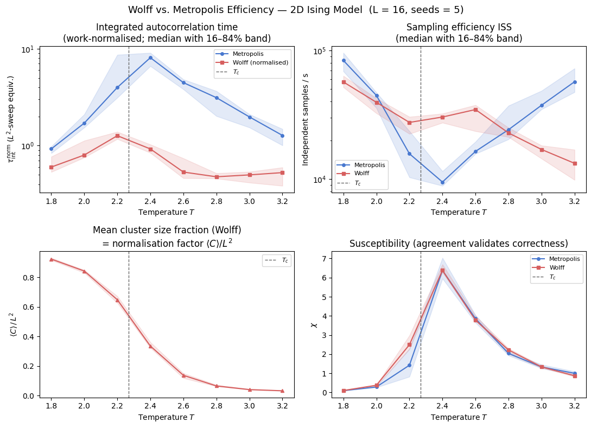
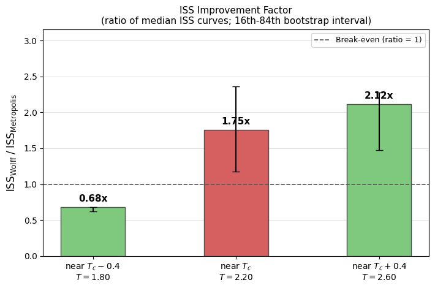
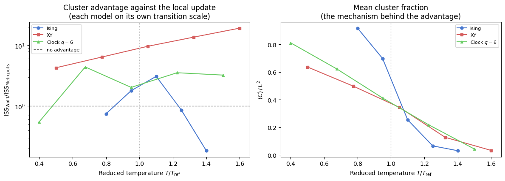

Wolff vs. Metropolis: Algorithmic Efficiency in the Critical Regime
Near a second-order phase transition, standard Metropolis-Hastings [1] suffers from critical slowing down: the integrated autocorrelation time \(\tau_{\mathrm{int}}\) [5] grows as \(\tau_{\mathrm{int}} \sim L^z\), with a dynamic critical exponent \(z \approx 2.17\) for the 2D Ising model. Physically, successive spin configurations generated by single-site flips remain highly correlated for many steps because proposed flips within a large correlated domain are overwhelmingly rejected and the system cannot efficiently cross free-energy barriers by small local moves.
The Wolff cluster algorithm [2] largely removes this bottleneck. Rather than proposing a single-spin flip, Wolff grows a cluster from a random seed by probabilistically bonding same-sign nearest neighbours with probability \(P_{\mathrm{add}} = 1 - e^{-2\beta J}\), then flips the entire cluster in one accepted collective move. The bond probability is derived from the Fortuin-Kasteleyn random-cluster representation [3] and guarantees detailed balance without any rejections. The dynamic critical exponent drops to \(z \approx 0.25\), nearly an order of magnitude smaller than Metropolis.
The practical benefit is regime-dependent. Far below \(T_c\) the equilibrium state is a single near-spanning ferromagnetic domain; all grown clusters are system-spanning and flipping them merely reverses the global magnetization without decorrelating the configuration. Far above \(T_c\) the correlation length is short and clusters are vanishingly small, so the BFS overhead dominates. The Wolff advantage is concentrated in the window \(|T - T_c| \lesssim 0.2\,T_c\) where \(\xi\) is large but finite. For a comprehensive review of these methods, see Newman and Barkema [4].
The normalisation problem
A naive comparison of \(\tau_{\mathrm{int}}\) step counts between the two algorithms is misleading because the algorithms do different amounts of physical work per recorded step:
Algorithm |
Work per step |
|---|---|
Metropolis (checkerboard) |
\(L^2\) single-spin flip attempts - one full lattice sweep |
Wolff cluster |
1 cluster flip of \(\langle C \rangle\) spins - 100% acceptance rate |
Counting raw steps treats a Wolff step at \(T \gg T_c\), where a cluster holds only a handful of spins, as equivalent to a Metropolis sweep that touches all \(L^2\) spins. In the disordered phase Wolff then appears to need many more steps than Metropolis, and below \(T_c\), where clusters are nearly system-spanning, a single step does about a sweep of work. A raw step count therefore says nothing about the work each algorithm spends on decorrelation.
The standard fix is to express autocorrelation time in units of one \(L^2\) flip-attempt sweep:
where \(\langle C \rangle\) is the mean cluster size, measured in a separate pass of up to 300 cluster flips on the equilibrated chain. After normalisation, both algorithms are on the same ruler: how many equivalent full-lattice sweep attempts are needed to decorrelate.
The measurement budget is set in the same unit. Metropolis records one sample per sweep. Wolff records one sample every \(\mathrm{round}(L^2/\langle C \rangle)\) cluster flips, so each Wolff sample also represents about one sweep of flipped spins, and both algorithms receive the same number of samples in sweep units. The stored tau_wolff is converted back to cluster flips (the autocorrelation time in samples times the flips per sample), and the normalisation above turns it into sweeps.
Giving both algorithms the same number of raw steps instead would leave Wolff with only a few sweeps of work in the paramagnet, too short a series to resolve its autocorrelation.
This notebook therefore reports two complementary views. The work-normalised \(\tau_{\mathrm{int}}\) makes the decorrelation cost of the two algorithms comparable on one ruler, and the independent-sample rate in inverse seconds sidesteps the unit question altogether, since it is invariant under any rescaling of the update unit and so needs no extra conversion.
[1]:
from __future__ import annotations
import os
import matplotlib.pyplot as plt
import numpy as np
TC_ISING: float = 2.0 / np.log(1.0 + np.sqrt(2.0))
PALETTE = {'metro': '#4878CF', 'wolff': '#D65F5F'}
print(f'Exact Onsager T_c = {TC_ISING:.6f}')
Exact Onsager T_c = 2.269185
Load or compute data
This notebook compares the independent-sample rate and autocorrelation structure of checkerboard Metropolis and Wolff dynamics across temperature. It first searches for precomputed measurements at ../results/ising/wolff_efficiency.npz.
When the cache file is present, the notebook loads median summaries with 16–84% bands across seeds and, when available, per-seed sample arrays for uncertainty-aware analysis. The same plotting code also supports legacy caches that only contain single-value arrays.
When the cache file is absent, the notebook runs a small inline fallback (L=16, 8 temperature points from 1.8 to 3.2, five seed replicas, 500 samples per algorithm) so the workflow remains self-contained. The stored outputs of this notebook come from that fallback. It is useful for validating analysis logic and plotting, but it is intentionally small and should be treated as demo quality: at \(L = 16\) critical slowing down is weak, and the independent-sample rates depend on wall-clock
timings that vary between executions.
For publication-quality data, run:
python scripts/ising/wolff_efficiency.py --size 64 --t-points 20 --n-seeds 10 --meas-steps 2000
This stores both aggregate statistics and per-seed arrays in ../results/ising/wolff_efficiency.npz for reuse on subsequent notebook runs.
[2]:
NPZ_PATH = '../results/ising/wolff_efficiency.npz'
def _bands_from_samples(samples: np.ndarray) -> tuple[np.ndarray, np.ndarray, np.ndarray]:
med = np.nanmedian(samples, axis=1)
p16 = np.nanpercentile(samples, 16, axis=1)
p84 = np.nanpercentile(samples, 84, axis=1)
return med, p16, p84
_cache_ok = False
if os.path.exists(NPZ_PATH):
data = np.load(NPZ_PATH)
_required = {
'temperatures', 'tau_metro', 'tau_wolff',
'iss_metro', 'iss_wolff', 'mean_cluster_frac',
'chi_metro', 'chi_wolff', 'L',
}
if _required.issubset(set(data.files)):
temperatures = data['temperatures']
tau_metro = data['tau_metro']
tau_wolff = data['tau_wolff']
iss_metro = data['iss_metro']
iss_wolff = data['iss_wolff']
mean_cluster_frac = data['mean_cluster_frac']
chi_metro = data['chi_metro']
chi_wolff = data['chi_wolff']
L = int(data['L'])
have_samples = {
'tau_metro_samples', 'tau_wolff_samples',
'iss_metro_samples', 'iss_wolff_samples',
'mean_cluster_frac_samples',
'chi_metro_samples', 'chi_wolff_samples',
}.issubset(set(data.files))
if have_samples:
tau_metro_samples = data['tau_metro_samples']
tau_wolff_samples = data['tau_wolff_samples']
iss_metro_samples = data['iss_metro_samples']
iss_wolff_samples = data['iss_wolff_samples']
mean_cluster_frac_samples = data['mean_cluster_frac_samples']
chi_metro_samples = data['chi_metro_samples']
chi_wolff_samples = data['chi_wolff_samples']
n_seeds = int(data['n_seeds']) if 'n_seeds' in data.files else int(tau_metro_samples.shape[1])
tau_metro, tau_metro_p16, tau_metro_p84 = _bands_from_samples(tau_metro_samples)
tau_wolff, tau_wolff_p16, tau_wolff_p84 = _bands_from_samples(tau_wolff_samples)
iss_metro, iss_metro_p16, iss_metro_p84 = _bands_from_samples(iss_metro_samples)
iss_wolff, iss_wolff_p16, iss_wolff_p84 = _bands_from_samples(iss_wolff_samples)
mean_cluster_frac, mean_cluster_frac_p16, mean_cluster_frac_p84 = _bands_from_samples(mean_cluster_frac_samples)
chi_metro, chi_metro_p16, chi_metro_p84 = _bands_from_samples(chi_metro_samples)
chi_wolff, chi_wolff_p16, chi_wolff_p84 = _bands_from_samples(chi_wolff_samples)
print(
f'Loaded pre-computed data: L={L}, {len(temperatures)} temperature points, '
f'{n_seeds} seed replicas.'
)
else:
# Legacy cache compatibility: synthesize singleton sample dimension.
tau_metro_samples = tau_metro[:, None]
tau_wolff_samples = tau_wolff[:, None]
iss_metro_samples = iss_metro[:, None]
iss_wolff_samples = iss_wolff[:, None]
mean_cluster_frac_samples = mean_cluster_frac[:, None]
chi_metro_samples = chi_metro[:, None]
chi_wolff_samples = chi_wolff[:, None]
n_seeds = 1
tau_metro_p16 = tau_metro_p84 = tau_metro
tau_wolff_p16 = tau_wolff_p84 = tau_wolff
iss_metro_p16 = iss_metro_p84 = iss_metro
iss_wolff_p16 = iss_wolff_p84 = iss_wolff
mean_cluster_frac_p16 = mean_cluster_frac_p84 = mean_cluster_frac
chi_metro_p16 = chi_metro_p84 = chi_metro
chi_wolff_p16 = chi_wolff_p84 = chi_wolff
print(
f'Loaded legacy cache: L={L}, {len(temperatures)} temperature points, '
'no seed uncertainty arrays.'
)
_cache_ok = True
else:
print(f'Cache at {NPZ_PATH} is missing expected keys; running inline fallback.')
if not _cache_ok:
print('Pre-computed data not found. Running inline demo (L=16, 8 T-points, 5 seeds, a few seconds)...')
from models.ising_model import IsingSimulation
from utils.efficiency_runner import EfficiencyPoint, measure_efficiency_point
L = 16
temperatures = np.linspace(1.8, 3.2, 8)
EQ_CHUNK, EQ_MAX, MEAS = 100, 10000, 500
n_seeds = 5
n_temp = len(temperatures)
# The production worker: independent seeds for the two starts, the
# certified start measured, and Wolff sampled once per sweep-equivalent of
# flipped spins so both algorithms get the same budget in sweep units.
_keys = (
'tau_metro', 'tau_wolff', 'iss_metro', 'iss_wolff',
'mean_cluster_frac', 'chi_metro', 'chi_wolff',
)
_samples = {k: np.full((n_temp, n_seeds), np.nan) for k in _keys}
for i, T in enumerate(temperatures):
for s in range(n_seeds):
record = measure_efficiency_point(EfficiencyPoint(
temp_idx=i, seed_idx=s, temperature=float(T), size=L,
eq_probe_steps=EQ_CHUNK, eq_max_steps=EQ_MAX, meas_steps=MEAS,
model_cls=IsingSimulation, model_kwargs={},
))
for k in _keys:
_samples[k][i, s] = record[k]
print(f' T={T:.2f} complete ({n_seeds} seeds)', flush=True)
tau_metro_samples = _samples['tau_metro']
tau_wolff_samples = _samples['tau_wolff']
iss_metro_samples = _samples['iss_metro']
iss_wolff_samples = _samples['iss_wolff']
mean_cluster_frac_samples = _samples['mean_cluster_frac']
chi_metro_samples = _samples['chi_metro']
chi_wolff_samples = _samples['chi_wolff']
tau_metro, tau_metro_p16, tau_metro_p84 = _bands_from_samples(tau_metro_samples)
tau_wolff, tau_wolff_p16, tau_wolff_p84 = _bands_from_samples(tau_wolff_samples)
iss_metro, iss_metro_p16, iss_metro_p84 = _bands_from_samples(iss_metro_samples)
iss_wolff, iss_wolff_p16, iss_wolff_p84 = _bands_from_samples(iss_wolff_samples)
mean_cluster_frac, mean_cluster_frac_p16, mean_cluster_frac_p84 = _bands_from_samples(mean_cluster_frac_samples)
chi_metro, chi_metro_p16, chi_metro_p84 = _bands_from_samples(chi_metro_samples)
chi_wolff, chi_wolff_p16, chi_wolff_p84 = _bands_from_samples(chi_wolff_samples)
print('Inline fallback complete.')
Pre-computed data not found. Running inline demo (L=16, 8 T-points, 5 seeds, a few seconds)...
T=1.80 complete (5 seeds)
T=2.00 complete (5 seeds)
T=2.20 complete (5 seeds)
T=2.40 complete (5 seeds)
T=2.60 complete (5 seeds)
T=2.80 complete (5 seeds)
T=3.00 complete (5 seeds)
T=3.20 complete (5 seeds)
Inline fallback complete.
Work normalisation
Raw tau_wolff values count Wolff cluster updates, not full-lattice sweep equivalents. Before comparing dynamics, we convert both algorithms to the same work unit: one \(L^2\)-flip-attempt sweep.
Metropolis (checkerboard) already touches \(L^2\) spins per step, so:
Wolff touches \(\langle C \rangle\) spins per step, so:
The cluster fraction \(\langle C \rangle / L^2\) is measured directly from the cluster sizes recorded in a short pass of up to 300 flips (run_with_cluster_sizes) on the equilibrated chain, the same pass that sets the Wolff sample spacing. Both autocorrelation times come from calculate_autocorr, which applies the Madras-Sokal automatic window [5] with window constant 6, cutting the sum at lag \(W = 6\,\tau_{\mathrm{int}}\).
Why ISS itself is unit-invariant
ISS has units of inverse time (independent samples per second):
Here \(r_u\) is the update rate (updates per second) and \(\tau_u\) is the autocorrelation time measured in the same update unit \(u\).
If we rescale the update unit by a factor \(a\), then \(r_{u'} = r_u / a\) and \(\tau_{u'} = a\,\tau_u\). Their product is unchanged, so ISS is invariant under this conversion.
So this notebook normalises \(\tau\) explicitly wherever the two algorithms are compared, and leaves ISS numerically untouched, reporting it with uncertainty bands across seed replicas.
[3]:
# Work-normalisation: convert tau to L²-sweep equivalents.
# mean_cluster_frac = <C> / L² (recorded per-step from run_with_cluster_sizes)
L2 = L * L
# Median normalised autocorrelation times
tau_metro_norm = tau_metro
tau_wolff_norm = tau_wolff * mean_cluster_frac
# Seed-level normalised tau for uncertainty propagation
tau_metro_norm_samples = tau_metro_samples
tau_wolff_norm_samples = tau_wolff_samples * mean_cluster_frac_samples
def _bands(samples: np.ndarray) -> tuple[np.ndarray, np.ndarray, np.ndarray]:
med = np.nanmedian(samples, axis=1)
p16 = np.nanpercentile(samples, 16, axis=1)
p84 = np.nanpercentile(samples, 84, axis=1)
return med, p16, p84
tau_metro_norm, tau_metro_norm_p16, tau_metro_norm_p84 = _bands(tau_metro_norm_samples)
tau_wolff_norm, tau_wolff_norm_p16, tau_wolff_norm_p84 = _bands(tau_wolff_norm_samples)
# ISS is unit-invariant under update-unit rescaling, so keep values unchanged.
iss_metro_norm = iss_metro
iss_wolff_norm = iss_wolff
iss_metro_norm_samples = iss_metro_samples
iss_wolff_norm_samples = iss_wolff_samples
iss_metro_norm, iss_metro_norm_p16, iss_metro_norm_p84 = _bands(iss_metro_norm_samples)
iss_wolff_norm, iss_wolff_norm_p16, iss_wolff_norm_p84 = _bands(iss_wolff_norm_samples)
print(f'L = {L}, N = L² = {L2}, seed replicas = {n_seeds}')
print('\nMean cluster size fraction <C>/L² per temperature (median [16th,84th]):')
for T, c, c16, c84 in zip(temperatures, mean_cluster_frac, mean_cluster_frac_p16, mean_cluster_frac_p84, strict=True):
print(f' T = {T:.3f}: {c:.4f} [{c16:.4f}, {c84:.4f}] (<C> ≈ {c * L2:.1f} spins)')
print('\nWork-normalised tau_int (L²-sweep equivalents), median [16th,84th]:')
hdr = f' {"T":>6} {"tau_metro_norm":>24} {"tau_wolff_norm":>24}'
print(hdr)
for T, tm, tm16, tm84, tw, tw16, tw84 in zip(
temperatures,
tau_metro_norm, tau_metro_norm_p16, tau_metro_norm_p84,
tau_wolff_norm, tau_wolff_norm_p16, tau_wolff_norm_p84, strict=True,
):
print(
f' {T:>6.3f} '
f'{tm:>8.3f} [{tm16:>7.3f}, {tm84:>7.3f}] '
f'{tw:>8.3f} [{tw16:>7.3f}, {tw84:>7.3f}]'
)
L = 16, N = L² = 256, seed replicas = 5
Mean cluster size fraction <C>/L² per temperature (median [16th,84th]):
T = 1.800: 0.9227 [0.9156, 0.9310] (<C> ≈ 236.2 spins)
T = 2.000: 0.8419 [0.8300, 0.8490] (<C> ≈ 215.5 spins)
T = 2.200: 0.6480 [0.6267, 0.6721] (<C> ≈ 165.9 spins)
T = 2.400: 0.3348 [0.3229, 0.3608] (<C> ≈ 85.7 spins)
T = 2.600: 0.1372 [0.1182, 0.1508] (<C> ≈ 35.1 spins)
T = 2.800: 0.0651 [0.0626, 0.0724] (<C> ≈ 16.7 spins)
T = 3.000: 0.0405 [0.0399, 0.0438] (<C> ≈ 10.4 spins)
T = 3.200: 0.0324 [0.0322, 0.0345] (<C> ≈ 8.3 spins)
Work-normalised tau_int (L²-sweep equivalents), median [16th,84th]:
T tau_metro_norm tau_wolff_norm
1.800 0.925 [ 0.836, 0.981] 0.601 [ 0.534, 0.769]
2.000 1.708 [ 1.539, 2.104] 0.800 [ 0.755, 1.125]
2.200 3.986 [ 3.127, 8.654] 1.266 [ 1.171, 1.389]
2.400 8.085 [ 6.615, 9.069] 0.925 [ 0.843, 1.027]
2.600 4.468 [ 3.814, 4.824] 0.534 [ 0.462, 0.740]
2.800 3.125 [ 2.019, 3.655] 0.477 [ 0.458, 0.519]
3.000 1.978 [ 1.538, 2.106] 0.499 [ 0.415, 0.537]
3.200 1.274 [ 1.005, 1.484] 0.527 [ 0.385, 0.596]
Four-panel overview
The four panels show the efficiency comparison across temperature using median values with 16–84% bands over the seed replicas.
Top-left, :math:`tau^{mathrm{norm}}_{mathrm{int}}(T)`: Autocorrelation times in \(L^2\)-sweep equivalents. This is the work-comparable view of decorrelation cost, where critical slowing down of the local update appears as a peak near the transition.
Top-right, :math:`mathrm{ISS}(T)` on a log scale: Independent samples per second with seed-uncertainty bands. ISS is unit-invariant under update-unit rescaling, so values are unchanged by the \(\tau\) normalisation step. The log axis shows where the two curves cross as well as their ratio.
Bottom-left, :math:`langle C rangle / L^2(T)`: Mean cluster-size fraction (with uncertainty). This is the Wolff work-normalisation factor and the physical mechanism behind reduced critical slowing down.
Bottom-right, :math:`chi(T)`: Susceptibility agreement between algorithms (with uncertainty). Agreement confirms both updates sample the same equilibrium distribution; systematic disagreement would indicate a correctness issue.
[4]:
fig, axes = plt.subplots(2, 2, figsize=(11, 8))
fig.suptitle(
f'Wolff vs. Metropolis Efficiency — 2D Ising Model (L = {L}, seeds = {n_seeds})', fontsize=13,
)
# tau_int_norm(T) — work-normalised, L²-sweep equivalents
ax = axes[0, 0]
ax.semilogy(temperatures, tau_metro_norm, '-o', color=PALETTE['metro'], ms=4, label='Metropolis')
ax.semilogy(temperatures, tau_wolff_norm, '-s', color=PALETTE['wolff'], ms=4, label='Wolff (normalised)')
ax.fill_between(temperatures, tau_metro_norm_p16, tau_metro_norm_p84, color=PALETTE['metro'], alpha=0.15)
ax.fill_between(temperatures, tau_wolff_norm_p16, tau_wolff_norm_p84, color=PALETTE['wolff'], alpha=0.15)
ax.axvline(TC_ISING, color='0.4', ls='--', lw=1, label=r'$T_c$')
ax.set_xlabel('Temperature $T$')
ax.set_ylabel(r'$\tau^{\mathrm{norm}}_{\mathrm{int}}$ ($L^2$-sweep equiv.)')
ax.set_title('Integrated autocorrelation time\n(work-normalised; median with 16–84% band)')
ax.legend(fontsize=8)
# ISS(T) — unit-invariant under update-unit conversion; log scale improves readability
ax = axes[0, 1]
ax.semilogy(temperatures, iss_metro_norm, '-o', color=PALETTE['metro'], ms=4, label='Metropolis')
ax.semilogy(temperatures, iss_wolff_norm, '-s', color=PALETTE['wolff'], ms=4, label='Wolff')
ax.fill_between(temperatures, iss_metro_norm_p16, iss_metro_norm_p84, color=PALETTE['metro'], alpha=0.15)
ax.fill_between(temperatures, iss_wolff_norm_p16, iss_wolff_norm_p84, color=PALETTE['wolff'], alpha=0.15)
ax.axvline(TC_ISING, color='0.4', ls='--', lw=1, label=r'$T_c$')
ax.set_xlabel('Temperature $T$')
ax.set_ylabel('Independent samples / s')
ax.set_title('Sampling efficiency ISS\n(median with 16–84% band)')
ax.legend(fontsize=8)
# mean cluster size fraction — normalisation factor
ax = axes[1, 0]
ax.plot(temperatures, mean_cluster_frac, '-^', color=PALETTE['wolff'], ms=4)
ax.fill_between(temperatures, mean_cluster_frac_p16, mean_cluster_frac_p84, color=PALETTE['wolff'], alpha=0.15)
ax.axvline(TC_ISING, color='0.4', ls='--', lw=1, label=r'$T_c$')
ax.set_xlabel('Temperature $T$')
ax.set_ylabel(r'$\langle C \rangle \,/\, L^2$')
ax.set_title(r'Mean cluster size fraction (Wolff)' + '\n' + r'= normalisation factor $\langle C\rangle/L^2$')
ax.legend(fontsize=8)
# chi consistency
ax = axes[1, 1]
ax.plot(temperatures, chi_metro, '-o', color=PALETTE['metro'], ms=4, label='Metropolis')
ax.plot(temperatures, chi_wolff, '-s', color=PALETTE['wolff'], ms=4, label='Wolff')
ax.fill_between(temperatures, chi_metro_p16, chi_metro_p84, color=PALETTE['metro'], alpha=0.15)
ax.fill_between(temperatures, chi_wolff_p16, chi_wolff_p84, color=PALETTE['wolff'], alpha=0.15)
ax.axvline(TC_ISING, color='0.4', ls='--', lw=1, label=r'$T_c$')
ax.set_xlabel('Temperature $T$')
ax.set_ylabel(r'$\chi$')
ax.set_title(r'Susceptibility (agreement validates correctness)')
ax.legend(fontsize=8)
fig.tight_layout()
plt.show()

In the fallback run (\(L = 16\), five seeds, 500 samples per algorithm) the work-normalised Metropolis time rises from 0.92 sweeps at \(T = 1.8\) to a peak of 8.1 sweeps at \(T = 2.4\) and falls back to 1.27 sweeps at \(T = 3.2\). The peak sits above \(T_c = 2.269\) because the pseudo-critical point of a 16 by 16 lattice is shifted to higher temperature; the susceptibility peaks at the same grid point. The Wolff time stays between 0.48 and 1.27 sweeps, so in sweep units the cluster update decorrelates faster at every temperature, by a factor of 1.5 at \(T = 1.8\) and 8.7 at \(T = 2.4\).
The wall-clock rate does not follow \(\tau^{\mathrm{norm}}\) at the edges of the window. Wolff yields more independent samples per second only from \(T = 2.2\) to \(2.6\), by a factor of about two to three (about 3 at \(T = 2.4\)). At \(T = 1.8\) and from \(T = 3.0\) upward Metropolis is ahead, by a factor of about four at \(T = 3.2\), and near \(T = 2.0\) and \(T = 2.8\) the two rates are about equal. Because \(\tau^{\mathrm{norm}}\) favours Wolff everywhere, these losses come from the cost of one sweep-equivalent of work. In the paramagnet a cluster holds 8 to 17 spins (\(\langle C \rangle / L^2\) between 0.03 and 0.07), so one sample takes up to 31 separate cluster flips, each a call into the compiled kernel with its own fixed overhead, while one checkerboard call updates all 256 spins. Deep in the ordered phase a sample costs one cluster flip, but growing a cluster over 92% of the lattice costs more than a checkerboard sweep, and flipping an almost spanning cluster mostly reverses the global magnetisation rather than decorrelating \(|m|\).
The bottom-left panel shows the mechanism behind both effects: the cluster fraction falls from 0.92 at \(T = 1.8\) through 0.65 at \(T = 2.2\) to 0.03 at \(T = 3.2\). In the bottom-right panel the two susceptibility curves agree within the bands at and above the peak (\(\chi \approx 6.4\) for both at \(T = 2.4\)) and at \(T = 1.8\). Just below \(T_c\) the Wolff values are higher: 0.38 against 0.29 at \(T = 2.0\), where the two bands do not overlap, and 2.5 against 1.4 at \(T = 2.2\), where they touch. The gap is a finite-sample bias of the Metropolis estimate, not a disagreement between the samplers. Just below \(T_c\) on a small lattice, \(\mathrm{Var}(|m|)\) is dominated by rare excursions to low \(|m|\), and 500 Metropolis sweeps rarely visit them even though the autocorrelation time of \(|m|\) is only about 2 sweeps. At \(T = 2.0\) and \(L = 16\), the five Metropolis seeds give 0.25 to 0.31 with 500 sweeps and 0.33 to 0.45 with 5 000, and single runs of 200 000 samples give 0.386 (checkerboard), 0.376 (random site), and 0.393 (Wolff), consistent with each other. The cluster update reaches the excursions quickly, which is the efficiency difference this notebook measures.
ISS improvement factor at three characteristic temperatures
The bar chart below extracts
at the three grid temperatures nearest to \(T_c - 0.4\), \(T_c\), and \(T_c + 0.4\). On the eight-point fallback grid these are \(T = 1.80\), \(2.20\), and \(2.60\), and the bar labels show the temperatures actually used.
To keep the panel fully consistent with the four-panel ISS plot, bar heights are computed as the ratio of the same median ISS curves shown in the top-right panel:
Error bars are estimated by paired bootstrap resampling of seed replicas (16th-84th percentile of the bootstrap ratio distribution). This keeps uncertainty transparent without changing the panel’s central statistic.
[5]:
t_targets = [TC_ISING - 0.4, TC_ISING, TC_ISING + 0.4]
# Each bar uses the grid point nearest its target, so the label shows the
# temperature actually measured rather than the target itself.
t_indices = [int(np.argmin(np.abs(temperatures - Tt))) for Tt in t_targets]
target_names = ['$T_c - 0.4$', '$T_c$', '$T_c + 0.4$']
bar_labels = [
f'near {name}\n$T = {temperatures[idx]:.2f}$'
for name, idx in zip(target_names, t_indices, strict=True)
]
bar_colors = ['#7fc97f', PALETTE['wolff'], '#7fc97f']
ratio_med = []
ratio_p16 = []
ratio_p84 = []
context_rows = []
rng = np.random.default_rng(12345)
for idx in t_indices:
# Center statistic: ratio of medians (matches the four-panel ISS curves).
med_ratio = float(iss_wolff_norm[idx] / iss_metro_norm[idx])
# Uncertainty: paired bootstrap over seed replicas of the ratio-of-medians.
m_samples = iss_metro_norm_samples[idx]
w_samples = iss_wolff_norm_samples[idx]
valid = np.isfinite(m_samples) & np.isfinite(w_samples) & (m_samples > 0)
m_valid = m_samples[valid]
w_valid = w_samples[valid]
if len(m_valid) >= 2:
n_boot = 2000
boot = np.empty(n_boot, dtype=float)
n = len(m_valid)
for b in range(n_boot):
pick = rng.integers(0, n, size=n)
m_med = np.nanmedian(m_valid[pick])
w_med = np.nanmedian(w_valid[pick])
boot[b] = w_med / m_med if np.isfinite(m_med) and m_med > 0 else np.nan
boot = boot[np.isfinite(boot)]
if boot.size:
p16 = float(np.nanpercentile(boot, 16))
p84 = float(np.nanpercentile(boot, 84))
else:
p16 = med_ratio
p84 = med_ratio
else:
p16 = med_ratio
p84 = med_ratio
ratio_med.append(med_ratio)
ratio_p16.append(p16)
ratio_p84.append(p84)
context_rows.append({
'T': float(temperatures[idx]),
'tau_m_norm': float(tau_metro_norm[idx]),
'tau_w_norm': float(tau_wolff_norm[idx]),
'iss_m': float(iss_metro_norm[idx]),
'iss_w': float(iss_wolff_norm[idx]),
'cfrac': float(mean_cluster_frac[idx]),
})
fig, ax = plt.subplots(figsize=(7.2, 4.8))
x = np.arange(len(bar_labels))
vals = np.array(ratio_med)
err_low = np.clip(vals - np.array(ratio_p16), 0, None)
err_high = np.clip(np.array(ratio_p84) - vals, 0, None)
yerr = np.vstack([err_low, err_high])
bars = ax.bar(
x,
vals,
yerr=yerr,
color=bar_colors,
width=0.45,
zorder=2,
edgecolor='0.3',
capsize=4,
)
ax.set_xticks(x)
ax.set_xticklabels(bar_labels)
ax.axhline(1.0, color='0.35', ls='--', lw=1.2, label='Break-even (ratio = 1)')
ax.set_ylabel(r'$\mathrm{ISS}_{\mathrm{Wolff}}\;/\;\mathrm{ISS}_{\mathrm{Metropolis}}$', fontsize=12)
ax.set_title('ISS Improvement Factor\n(ratio of median ISS curves; 16th-84th bootstrap interval)', fontsize=11)
ax.legend(fontsize=9)
ax.grid(axis='y', alpha=0.35, zorder=0)
finite_vals = [v for v in vals if np.isfinite(v)]
if finite_vals:
ax.set_ylim(0, max(finite_vals) * 1.35 + 0.3)
for bar, val in zip(bars, vals, strict=True):
if np.isfinite(val):
ax.text(
bar.get_x() + bar.get_width() / 2,
bar.get_height() + 0.05,
f'{val:.2f}x',
ha='center',
va='bottom',
fontsize=11,
fontweight='bold',
)
fig.tight_layout()
plt.show()
print('\nContext at selected temperatures (median values):')
print(f'{"T":>6} {"<C>/L^2":>10} {"tau_m_norm":>12} {"tau_w_norm":>12} {"ISS_m":>10} {"ISS_w":>10} {"ratio":>8}')
for row, ratio in zip(context_rows, vals, strict=True):
print(
f"{row['T']:>6.3f} {row['cfrac']:>10.4f} {row['tau_m_norm']:>12.4f} {row['tau_w_norm']:>12.4f} "
f"{row['iss_m']:>10.2f} {row['iss_w']:>10.2f} {ratio:>8.3f}"
)

Context at selected temperatures (median values):
T <C>/L^2 tau_m_norm tau_w_norm ISS_m ISS_w ratio
1.800 0.9227 0.9249 0.6007 83746.62 56964.91 0.680
2.200 0.6480 3.9858 1.2659 15735.22 27583.81 1.753
2.600 0.1372 4.4683 0.5336 16411.73 34734.48 2.116
Reading the three-temperature ISS bars
Values above 1 mean that Wolff yields more independent samples per second; values below 1 mean that Metropolis is more efficient at that temperature. The bars give 0.68 at \(T = 1.80\), 1.75 at \(T = 2.20\), and 2.12 at \(T = 2.60\), so in this run Metropolis wins in the ordered phase and Wolff wins at and just above the transition. The context table shows why the ordering differs from the \(\tau^{\mathrm{norm}}\) ratio: at \(T = 1.80\) the Wolff time is lower (0.60 against 0.92 sweeps), but each sample costs a flip of 92% of the lattice, and that cost outweighs the gain.
The bootstrap intervals reflect only the seed scatter within this execution. At \(T = 2.20\) the interval runs from about 1.2 to 2.4, and because ISS is a wall-clock quantity the central value also moves between executions on the same machine. The largest Wolff advantage on this grid, about 3 at \(T = 2.4\), falls between the selected points and is visible in the four-panel figure.
Across models: Z2 flips versus reflections
Everything above concerns the Ising model. The cluster construction is not tied to a discrete sign flip, and this section measures how the comparison transfers to the XY model and to the discrete six-state clock model.
For the Ising model the Fortuin-Kasteleyn construction bonds aligned neighbours and flips the whole cluster, which is exact because \(s \to -s\) is a symmetry of the Hamiltonian. The planar models have no global sign flip, so Wolff’s embedding [2] replaces it with a reflection. A mirror axis is chosen, each spin’s component \(\sigma_i\) perpendicular to that axis is computed, and neighbours with \(\sigma_i\sigma_j > 0\) are bonded with probability
\(P_{\mathrm{add}} = 1 - \exp(-2\beta J\,\sigma_i\sigma_j)\). Reflecting the cluster about the axis leaves the energy of every bond inside it unchanged, so the only energy change sits on the cluster boundary, as for the Ising flip. For the XY model (XYSimulation, kernel o2_wolff_step_numba) the axis is drawn uniformly from the unit circle. For the clock model (DiscreteClockSimulation with \(q = 6\), kernel discrete_clock_wolff_step_numba) it is drawn uniformly from the
\(q\) mirror axes of the hexagon at angles \(\pi m / q\), which pass either through a clock state or midway between two. The reflection then maps state \(s\) to \((m - s) \bmod q\), so the update never leaves the discrete state space; Tomita and Okabe restrict the axis in the same way for their cluster updates of the clock model [6]. The local updates differ as well: the clock Metropolis kernel proposes a uniformly random new state, while the XY kernel
proposes a rotation by an angle drawn uniformly from \([-0.5, 0.5]\) rad.
The transitions differ in kind. The Ising transition is second order: \(\xi\) diverges as a power law and the slowing down of the local update is concentrated around \(T_c\). The XY transition at \(T_{\mathrm{BKT}} = 0.8933(6)\) [6] is of BKT type: \(\xi\) diverges exponentially as \(T \to T_{\mathrm{BKT}}^+\), and the whole low-temperature phase is critical. The \(q = 6\) clock model has two BKT transitions, at \(T_1 = 0.7014(11)\) and \(T_2 = 0.9008(6)\) [6], with sixfold long-range order below \(T_1\) and an XY-like critical phase between the two. The figure scales each model by one reference temperature: \(T_c\) for Ising, \(T_{\mathrm{BKT}} = 0.893\) for XY, and \(T_2\) for the clock model, for which the code uses 0.92, the earlier estimate of Challa and Landau quoted in [6], about 2% above the Tomita-Okabe value.
[6]:
from pathlib import Path
from models.clock_model import DiscreteClockSimulation
from models.ising_model import IsingSimulation
from models.xy_model import XYSimulation
from utils.efficiency_runner import EfficiencyPoint, measure_efficiency_point
def _find_repo_root() -> Path:
cwd = Path.cwd().resolve()
for candidate in (cwd, *cwd.parents):
if (candidate / 'pyproject.toml').exists() and (candidate / 'results').exists():
return candidate
return cwd
REPO_ROOT = _find_repo_root()
# Fallback grid, used per model only when its cached NPZ is missing. Small
# enough to stay interactive, wide enough that the ratio's temperature
# dependence is still visible. Run scripts/generate_all.py for real data.
_XM_SIZE, _XM_POINTS, _XM_MEAS, _XM_EQ_MAX = 16, 5, 400, 2000
CROSS_MODEL = {
'Ising': {
'cls': IsingSimulation, 'kwargs': {}, 'dir': 'ising',
't_ref': TC_ISING, 't_ref_label': r'$T_c$', 'window': (0.8, 1.4),
},
'XY': {
'cls': XYSimulation, 'kwargs': {}, 'dir': 'xy',
't_ref': 0.893, 't_ref_label': r'$T_{\mathrm{BKT}}$', 'window': (0.5, 1.6),
},
'Clock $q=6$': {
'cls': DiscreteClockSimulation, 'kwargs': {'q': 6}, 'dir': 'clock',
't_ref': 0.92, 't_ref_label': r'$T_2$', 'window': (0.4, 1.5),
},
}
cross = {}
for name, spec in CROSS_MODEL.items():
npz_path = REPO_ROOT / 'results' / spec['dir'] / 'wolff_efficiency.npz'
if npz_path.exists():
d = np.load(npz_path)
cross[name] = {
'T': d['temperatures'],
'iss_metro': d['iss_metro'],
'iss_wolff': d['iss_wolff'],
'cluster': d['mean_cluster_frac'],
'L': int(d['L']),
'provenance': f"cached, L={int(d['L'])}, {len(d['temperatures'])} points",
}
continue
lo, hi = spec['window']
temps = np.linspace(lo * spec['t_ref'], hi * spec['t_ref'], _XM_POINTS)
rows = [
measure_efficiency_point(EfficiencyPoint(
temp_idx=i, seed_idx=0, temperature=float(T), size=_XM_SIZE,
eq_probe_steps=200, eq_max_steps=_XM_EQ_MAX, meas_steps=_XM_MEAS,
model_cls=spec['cls'], model_kwargs=spec['kwargs'],
))
for i, T in enumerate(temps)
]
cross[name] = {
'T': temps,
'iss_metro': np.array([r['iss_metro'] for r in rows]),
'iss_wolff': np.array([r['iss_wolff'] for r in rows]),
'cluster': np.array([r['mean_cluster_frac'] for r in rows]),
'L': _XM_SIZE,
'provenance': (
f'fallback, L={_XM_SIZE}, {_XM_POINTS} points, '
f'{_XM_MEAS} steps, 1 seed'
),
}
for name, res in cross.items():
print(f'{name:12s} {res["provenance"]}')
xm_colors = {'Ising': '#4878CF', 'XY': '#D65F5F', 'Clock $q=6$': '#6ACC65'}
xm_markers = {'Ising': 'o', 'XY': 's', 'Clock $q=6$': '^'}
fig, axes = plt.subplots(1, 2, figsize=(12, 4.4))
ax = axes[0]
for name, res in cross.items():
t_red = res['T'] / CROSS_MODEL[name]['t_ref']
ratio = res['iss_wolff'] / res['iss_metro']
ax.semilogy(
t_red, ratio, '-' + xm_markers[name], color=xm_colors[name], ms=5, label=name,
)
ax.axhline(1.0, color='0.4', ls='--', lw=1, label='no advantage')
ax.axvline(1.0, color='0.7', ls=':', lw=1)
ax.set_xlabel(r'Reduced temperature $T / T_{\mathrm{ref}}$')
ax.set_ylabel(r'$\mathrm{ISS}_{\mathrm{Wolff}} / \mathrm{ISS}_{\mathrm{Metropolis}}$')
ax.set_title('Cluster advantage against the local update\n(each model on its own transition scale)')
ax.legend(fontsize=8)
ax = axes[1]
for name, res in cross.items():
t_red = res['T'] / CROSS_MODEL[name]['t_ref']
ax.plot(
t_red, res['cluster'], '-' + xm_markers[name], color=xm_colors[name], ms=5, label=name,
)
ax.axvline(1.0, color='0.7', ls=':', lw=1)
ax.set_xlabel(r'Reduced temperature $T / T_{\mathrm{ref}}$')
ax.set_ylabel(r'$\langle C \rangle \,/\, L^2$')
ax.set_title('Mean cluster fraction\n(the mechanism behind the advantage)')
ax.legend(fontsize=8)
fig.tight_layout()
plt.show()
Ising fallback, L=16, 5 points, 400 steps, 1 seed
XY fallback, L=16, 5 points, 400 steps, 1 seed
Clock $q=6$ fallback, L=16, 5 points, 400 steps, 1 seed

Reading the cross-model comparison
Each model is plotted against \(T/T_{\mathrm{ref}}\), so that the reference transitions line up at 1. The data come from the fallback path: one seed, \(L = 16\), five temperatures per model, 400 samples per algorithm, and a single wall-clock timing per point. There are no uncertainty bands, and the four-panel Ising figure above shows that ratios near break-even can move by tens of percent between seeds and executions, so only coarse features are read here.
The right panel shows the mechanism common to the three models. The mean cluster fraction falls from 0.6 to 0.9 of the lattice at the lowest temperatures to a few percent at the highest, and all three curves pass close to 0.35 at \(T/T_{\mathrm{ref}} \approx 1.05\). The Ising curve drops most steeply across its transition.
In the left panel the Ising ratio has the shape of the four-panel figure: Metropolis is ahead at \(0.8\,T_c\) and at \(1.25\) and \(1.4\,T_c\), and Wolff leads only around the transition, by a factor of about 3 at \(1.1\,T_c\). The XY ratio exceeds 1 at all five temperatures and rises monotonically, from about 4 at \(0.5\,T_{\mathrm{BKT}}\) to about 19 at \(1.6\,T_{\mathrm{BKT}}\). The rise into the paramagnet cannot be a critical effect. A likely contribution is the local move itself: the XY Metropolis kernel rotates a spin by at most 0.5 rad per attempt, so the magnetisation direction decorrelates only diffusively, while a reflection can move a spin by any angle. The clock ratio falls below 1 only at the lowest point, \(0.4\,T_2 \approx 0.37\), deep in the ordered phase where the cluster covers about 80% of the lattice. At the other four points it lies between about 2 and 4.5, without a clear peak at either \(T_1/T_2 \approx 0.76\) or \(T_2\).
The ratio folds in the speed of each kernel on this machine as well as the decorrelation per unit work, and at \(L = 16\) the critical slowing down that separates the algorithms near a second-order transition is weak; for Ising it grows as \(L^{2.17}\) for Metropolis against roughly \(L^{0.25}\) for Wolff in sweep units. Comparing peak heights or locating where each curve crosses 1 requires the cached production runs of scripts/ising/wolff_efficiency.py,
scripts/xy/wolff_efficiency.py, and scripts/clock/wolff_efficiency.py at larger \(L\) with several seeds.
When to use Wolff
The results above are consistent with the algorithm selection rule documented in AGENTS.md, with the caveat that the fallback run at \(L = 16\) shows only the small-lattice end of it.
Use ``update=’wolff’`` for equilibrium studies near criticality (roughly within 20% of \(T_c\)): finite-size scaling around susceptibility peaks, Binder-cumulant crossing analyses, or critical-exponent measurements. In the fallback run Wolff delivers more independent samples per second from \(T = 2.2\) to \(2.6\), by a factor of about two to three, which reduces the statistical error at fixed wall time, and its work-normalised \(\tau_{\mathrm{int}}\) is lower at every temperature. The advantage grows with lattice size, because the Metropolis autocorrelation time at \(T_c\) grows as \(L^{2.17}\) while the Wolff time in sweep units grows roughly as \(L^{0.25}\).
Use ``update=’checkerboard’`` away from \(T_c\). At \(T = 1.8\) and for \(T \ge 3.0\) Metropolis gives more independent samples per second in the fallback run, by up to a factor of about four at \(T = 3.2\): the cost of many small cluster flips per sweep-equivalent in the paramagnet, or of one near-spanning flip in the ordered phase, outweighs the lower \(\tau^{\mathrm{norm}}\) of the cluster update.
Core comparability rule: never compare raw \(\tau_{\mathrm{int}}\) step counts across algorithms. Always compare \(\tau\) in common work units (here, \(L^2\)-sweep equivalents). ISS can be compared directly in 1/s and is shown with seed uncertainty bands.
For kinetics studies, avoid both checkerboard and Wolff: use update='random' to preserve the intended non-equilibrium Glauber-like dynamics.
For theoretical background, covering the FK representation, cluster updates, and the derivation of the bond-addition probability, see PHYSICS.md.
Bibliography
[1] W. K. Hastings, “Monte Carlo sampling methods using Markov chains and their applications,” Biometrika, vol. 57, no. 1, pp. 97–109, 1970. Oxford Academic
[2] U. Wolff, “Collective Monte Carlo Updating for Spin Systems,” Physical Review Letters, vol. 62, no. 4, pp. 361–364, 1989. APS
[3] C. M. Fortuin and P. W. Kasteleyn, “On the random-cluster model. I. Introduction and relation to other models,” Physica, vol. 57, no. 4, pp. 536–564, 1972. Elsevier
[4] M. E. J. Newman and G. T. Barkema, “Monte Carlo Methods in Statistical Physics,” Oxford University Press, 1999. Book; for an open introduction to the same methods see H. G. Katzgraber, “Introduction to Monte Carlo Methods” arXiv:0905.1629
[5] A. D. Sokal, “Monte Carlo Methods in Statistical Mechanics: Foundations and New Algorithms,” lecture notes (1989), published in Functional Integration: Basics and Applications (C. DeWitt-Morette, P. Cartier, A. Folacci, eds.), Springer, 1997, pp. 131–192. Standard reference for the integrated autocorrelation time and the automatic windowing estimator. Springer Link
[6] Y. Tomita and Y. Okabe, “Probability-changing cluster algorithm for two-dimensional XY and clock models” (2002). Gives \(T_{\mathrm{BKT}} = 0.8933(6)\) for the XY model, \(T_1 = 0.7014(11)\) and \(T_2 = 0.9008(6)\) for the \(q = 6\) clock model, and the mirror-axis choice for clock-model cluster updates. arXiv:cond-mat/0202161